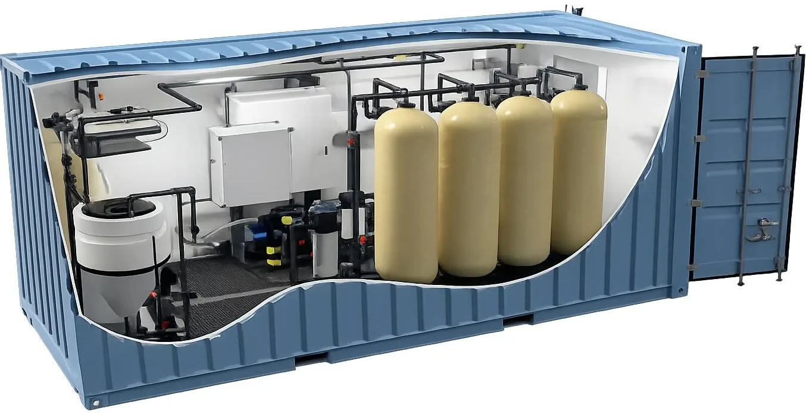
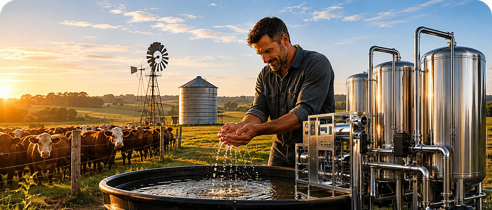

Filtros de agua para tajamares del Chaco Paraguayo
Sistemas de purificación y desalinización diseñados para mejorar la calidad del agua destinada al ganado y optimizar la producción pecuaria.

El agua influye directamente en la ganancia de peso
El agua purificada y estructurada utilizando nuestros sistemas de avanzada tecnología funcional del agua no contiene calorías ni nutrientes que engorden directamente al ganado, pero sí influye de forma decisiva en la hidratación, digestión y conversión alimenticia de los animales.
En la producción pecuaria moderna, el agua es considerada el segundo nutriente más importante para el bovino. Cuando el agua es limpia, estable y agradable al consumo, el animal bebe más, digiere mejor y transforma el alimento en kilos de carne o leche con mayor eficiencia.
Mayor consumo
El ganado rechaza agua con olor, sabor desagradable o contaminantes. El agua tratada mejora la palatabilidad y aumenta el consumo diario.
Conversión alimenticia
Una hidratación eficiente mejora la digestión ruminal y la absorción de nutrientes.
Menos enfermedades
Reduce bacterias, virus, parásitos y minerales problemáticos que afectan la salud animal.
Mayor producción
Más ingestión de agua y alimento significa más producción de carne y leche.
La solución Aqua Hunza
Para diseñar un purificador de agua para el ganado que filtre sedimentos y elimine microbios, bacterias, virus, parásitos y contaminantes complejos sin utilizar cloro convencional, Aqua Hunza implementa sistemas integrados de múltiples etapas de purificación.
Dependiendo del tipo de agua a tratar, el sistema puede utilizar configuraciones dobles, triples o de más etapas para alcanzar el mejor resultado posible.
Desinfección sin cloro
Primera fase de tratamiento mediante materiales solubles e inyectables controlados por bombas dosificadoras.
El objetivo es controlar microbios, bacterias, virus y parásitos sin afectar el sabor ni el consumo del agua.
Filtración submicrónica
Se utiliza un mineral natural modificado de alta pureza que supera ampliamente a la arena convencional.
Retiene tierra, lodo, arena, óxido y sólidos suspendidos con una capacidad de filtración extremadamente superior.
Catalizador microvoltaico
Medio filtrante avanzado capaz de eliminar contaminantes mediante adsorción, oxidación y co-precipitación.
Elimina simultáneamente más de una veintena de contaminantes y evita la generación bacteriana dentro del sistema.
Refinado del agua
Un segundo catalizador optimiza la calidad final del agua, mejorando sabor, estabilidad y aceptación del ganado.
Protección microbiológica
Una bomba dosificadora aplica un agente desinfectante grado alimenticio de acción avanzada.
Elimina contaminación microbiológica y evita contagios provocados por la baba que los animales dejan al beber.
Análisis gratuito de agua
Contáctenos para evaluar la calidad del agua de su tajamar y diseñar un sistema adaptado a las necesidades reales de su producción.

Desalinizadores de agua para el ganado
Con Aqua Hunza, transforme agua salada o de baja calidad en un recurso vital para el desarrollo de su producción.
Nuestros sistemas de desalinización eliminan el exceso de minerales que afectan el crecimiento animal, permitiendo una hidratación óptima que mejora la ganancia de peso, la producción de leche y la salud general del rodeo.
Además, ayudan a reducir mortalidad, proteger la infraestructura de la corrosión y asegurar un suministro constante incluso en épocas de sequía severa.
¿Querés mejorar la calidad de tu agua?
Solicitá asesoramiento sin costo y un asesor te contactará para evaluar tu caso.